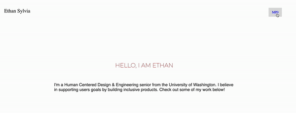
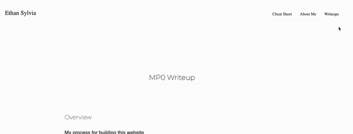

MP0 Writeup
Overview
My process for building this website
- Build the navbar
- Copy styles from my current portfolio
- Build pages asked for in the spec
- Google when confused
I have prior experience with using HTMl/CSS but it's been a long time, so I decided to build the navbar first to reintroduce basic web dev concepts.
I have prior experience with using HTMl/CSS but it's been a long time, so I decided to build the navbar first to reintroduce basic web dev concepts.
Issue
The part I struggled with for the longest while building the website was a bug I had with my dropdown menu. I knew I needed to have the dropdown containers display value change when the dropdown button was hovered, but the bug below happened
After some time googling on stackoverflow, I determined the issue was due to the containers height shifting the navbar links up, when I needed the container to grow in a downwards direction, under the button. I fixed this by setting position: fixed because this forces the container to stay in it's current spot, even if it's height changes.
CSS Transition
I used a dropdown menu element to be used for my CSS transition. I chose this because I wanted my navbar to include a section for my writeups, and since there will be more than one writeup this can let me easily add more links in the future. I made this work by styling the writeups button to look like the other links in the navbar. I then set display: none for the link container because I didn't want users to see it until they hover over the link, which changes the display: block.
Ideas & Future
My actual portfolio is still a WIP, so some of these ideas for the future include work
- Build out my project pages
- Mockups for the visual design of the pages, which could be used as a guide for future implementation
- Personal logo that can be used in the navbar
- Add a dropdown menu button for my projects in the navbar